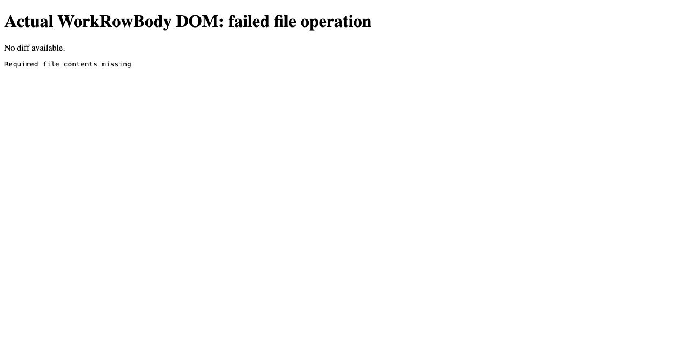

#3412 · File failure diagnostics are lost before rendering
Bug · Priority Low · Effort Low · threads · provider-pi
2026-09-10 · base 8ac123f3551e7502a91c93e87329797f34ee626b · Issue
PARTIALLY REPRODUCED · Root-cause confidence: high for tested paths; medium for the reported live scenario.
TL;DR
The actual file-change detail renderer shows its empty-diff message before a supplied error. A separate Pi translator/assembler test reveals a deeper issue: Pi failure text exists in the closing delta but is absent from the emitted file-change event. Thus passing an existing stderr value into the diff component alone would not recover this Pi diagnostic. These findings repeat in two clean trusted checkouts, but no live Pi session was used.
Claims vs findings
| Claim | Finding |
|---|---|
| No-diff file failures display an empty-diff message first. | Verified with the actual WorkRowBody component and an explicit failed-row fixture. |
| Pi forwards the error in resultText. | Verified at the closing delta. The assembler then drops it. |
| An ordinary old-text mismatch necessarily produces no diff. | Not established: the assembler synthesizes a proposed diff from old/new input contents, even before success is known. |
| The reported live Pi experience is reproduced. | Unverified. Tests inject synthetic SDK events and a timeline fixture. |
Environment
Public get-bb/bb origin/main at the commit above; Darwin arm64, Node v22.22.3, bb source 0.42.1. Frozen dependency install through Corepack pnpm succeeded. Full trusted-base Turbo build passed: 20/20 tasks. The host's bare pnpm launcher was broken; a temporary PATH shim delegated to Corepack. No dependency or lockfile changed. No live provider version is claimed. No server, application data directory, credentials, or network-facing core was used.
Minimal reproduction
- Clone get-bb/bb and check out the recorded commit.
- Run
corepack pnpm install --frozen-lockfile --prefer-offlineandcorepack pnpm exec turbo run buildwith a working pnpm on PATH. - Copy pi.test.ts (source/output embedded in this report) to
plugins/provider-pi/src/issue-3412.test.tsand ui.test.tsx (source/output embedded in this report) toapps/app/src/components/thread/timeline/issue-3412.test.tsx. - Run the following commands separately; both are expected to exit 1:
pnpm exec turbo run test --filter=bb-plugin-provider-pi -- issue-3412 pnpm exec turbo run test --filter=@bb/app -- issue-3412
Provider test expected: failure text survives assembly. Actual (edit and write):
Expected: "Required file contents missing" Received: fileChange item with changes, status "failed", approvalStatus null; no failure text.
UI test expected: error text present and no empty-diff message. Actual text content:
No diff available.Required file contents missing

To capture the same DOM, set REPRO_HTML=/tmp/component.html and add --env-mode=loose to the UI Turbo command; open that file in a browser. Captured DOM (source/output embedded in this report).
Provider reproduction source
import { describe, expect, it } from "vitest";
import { createDeltaAssembler } from "@bb/provider-bridge-protocol/assembler";
import { createPiDeltaTranslator } from "./delta-translation.js";
describe("failed Pi file operation diagnostics", () => {
it.each(["edit", "write"])("preserves %s failure text after assembly", (toolName) => {
const translator = createPiDeltaTranslator({ resolveModelContextWindow: () => undefined });
const assembler = createDeltaAssembler({ providerId: "pi", entropyPrefix: "repro", textDeltaFlushMs: 0 });
const translate = (event: unknown) => assembler.assemble({ threadId: "repro-thread", deltas: translator.translate(event) });
translate({ type: "agent_start" });
translate({ type: "tool_execution_start", toolCallId: "edit-1", toolName, args: { path: "sample.txt" } });
const deltas = translator.translate({ type: "tool_execution_end", toolCallId: "edit-1", toolName, isError: true, result: { content: [{ type: "text", text: "Required file contents missing" }] } });
expect(deltas).toContainEqual(expect.objectContaining({ kind: "item.close", status: "failed", resultText: "Required file contents missing" }));
const events = assembler.assemble({ threadId: "repro-thread", deltas });
console.log(JSON.stringify({ toolName, deltas, events }));
expect(JSON.stringify(events)).toContain("Required file contents missing");
});
});
UI reproduction source
// @vitest-environment jsdom
import { writeFileSync } from "node:fs";
import { cleanup, render, screen, waitFor } from "@testing-library/react";
import { afterEach, expect, it } from "vitest";
import { fileChangeRow } from "@/test/fixtures/thread-timeline-rows";
import { WorkRowBody } from "./TimelineRowDetails";
afterEach(cleanup);
it("shows an available file failure without an empty diff message", async () => {
const row = fileChangeRow({ status: "failed", diff: "", stderr: "Required file contents missing" });
const view = render(<WorkRowBody row={row} workspaceRootPath={undefined} />);
await waitFor(() => expect(view.container.querySelector('[data-testid="timeline-file-diff-skeleton"]')).toBeNull());
expect(screen.getByText("Required file contents missing")).toBeTruthy();
console.log(view.container.textContent);
if (process.env.REPRO_HTML) writeFileSync(process.env.REPRO_HTML, `<!doctype html><html><head><meta charset="utf-8"><title>3412 component capture</title></head><body><h1>Actual WorkRowBody DOM: failed file operation</h1>${view.container.innerHTML}</body></html>`);
expect(screen.queryByText("No diff available.")).toBeNull();
});
Root cause
plugins/provider-pi/src/delta-translation.ts:245 classifies edit/write calls by path, and plugins/provider-pi/src/delta-translation.ts:827 supplies failure status and resultText on close. The test uses a path-only invocation to exercise the no-content shape; it does not claim the Pi runtime necessarily emits that sequence.
packages/provider-bridge-protocol/src/assembler/delta-assembler.ts:993 constructs a closed fileChange item with changes and status but omits close.resultText. The alternate started-item close path at line 884 also omits it. The emitted event dump proves the text is already gone at this boundary.
packages/provider-bridge-protocol/src/assembler/delta-assembler.ts:479 synthesizes diffs from newText when supplied, so a failure does not by itself imply absence of a diff. packages/thread-view/src/file-edit-parsing.ts:56 projects file output deltas as stdout. apps/app/src/components/thread/timeline/TimelineRowDetails.tsx:245 renders the diff component before stderr. apps/app/src/components/thread/timeline/TimelineFileDiffBlock.tsx:105 unconditionally renders the empty state when both diff forms are absent.
Proposed fix
Preserve failed file-operation diagnostics through the shared event/row projection, then select an error-first body when no renderable diff exists. Add both data-path and component regressions. Keep successful no-diff behavior and real diffs covered. No automatic PR: a complete repair spans the provider assembly/projection and UI subsystems, exceeding this rule's single-subsystem condition. No production code was changed.
Verification
The same agent repeated both tests in a second clean detached worktree at the exact recorded commit, with its own frozen install and generated build dependencies. Only the two reproduction tests were copied. Provider assertions failed 2/2, and the UI assertion failed 1/1 with the same text ordering. A combined Turbo invocation initially stopped the UI task after the provider failure; the UI test was then rerun separately and completed. No ports or data directories were needed. This is a repeat run by the same agent, not independent verification.
Report correction: the issue's proposed UI-only cause is incomplete. Error text is also dropped during assembly; common edit arguments can already create a proposed diff. Verdict remains partial because no live Pi tool failure was exercised.
Related issues and PRs
No open PR was found via issue cross-reference metadata or an open PR search for 3412. Nearby Pi reports #3219 and #3240 concern different timeline behavior and do not establish this failure.
Appendix
Raw logs remain in the local report backup. The reproduction sources and decisive expected/actual output are embedded above, following reports repository policy.
Issue content was treated as untrusted claims; its suggested instructions were not executed. Tests were authored from trusted repository code. No private runtime data is included.